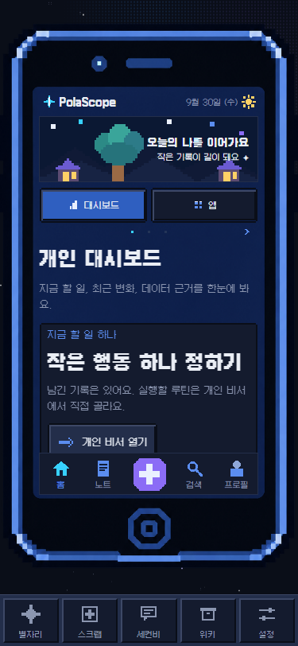

2ndB · 범위 정정 보고서
‘나의 핸드폰’ 안에서만 이어지는 경험
이전 시안은 핸드폰 프레임을 불필요한 장식처럼 걷어내고 별자리·뮤지엄까지 같은 핸드폰 화면처럼 배치했습니다. 둘 다 잘못 해석했습니다. 사용자가 준 핸드폰 에셋은 유지하고, 이번 검토와 후속 작업은 인앱 핸드폰 내부로 한정합니다.
범위: /dashboard와 그 안에서 여는 화면에셋: 변경 금지상태: 제안 · 앱 코드 미수정현재 QA 화면: 프레임을 그대로 둔다

바뀌지 않는 경계
핸드폰 외곽 에셋은 삭제·교체·축소하지 않습니다. 내부 화면의 정보 밀도와 탐색만 검토합니다.
‘앱’ 탭에서 시작한 기능은 핸드폰 프레임을 유지한 채 내부 화면이 전환돼야 합니다. AI 뮤지엄 아이콘도 예외가 아닙니다.
별자리 메인과 독립 진입한 전체 화면은 이번 보고서의 개선 대상이 아닙니다. 핸드폰에서 진입한 경우의 표현만 다룹니다.
사용자에게 보이는 구조
나의 핸드폰 · 고정된 에셋내부 디스플레이만 전환
대시보드앱 목록앱 상세알림 상세
명시적 종료아래로 스와이프 또는 홈 버튼으로 별자리로 복귀
현재 구현과 사용자 의도의 차이
유지할 것실제 핸드폰 이미지, 화면 창 안의 대시보드, 내부 알림 목록·상세, 아래 스와이프 종료.
핵심 간극앱 아이콘 대부분이 별도 전역 경로를 열어 핸드폰 외곽이 사라지는 구조.
이번 제출 범위핸드폰 내부의 정보 위계·탐색·실행 경로만 제안. 별자리·뮤지엄 전체 화면 개편은 제외.
| 대상 | 현재 확인된 동작 | 정정된 기준 |
|---|---|---|
| 프레임과 대시보드 | 유지 가능 제공된 빈 화면 에셋 위에 실제 콘텐츠를 렌더링한다. | 프레임과 화면 창의 관계를 유지하고, 읽기 쉬운 내부 레이아웃만 조정한다. |
| 알림 | 유지 가능 목록과 상세가 핸드폰 내부 상태로 전환된다. | 현재와 같이 프레임 안에서 열고, 내부 뒤로가기로 앱 목록에 돌아온다. |
| ‘앱’ 탭의 기능 아이콘 | 간극 개인 비서·집중·식사·뮤지엄 등은 router.push로 독립 경로를 연다. | 핸드폰에서 누른 기능은 프레임을 유지한 내부 앱 화면으로 진입한다. 기존 기능 전체를 단순 축소해 끼우지 않고 화면별로 조정한다. |
| 핸드폰 내부 하단 메뉴 | 간극 홈 외 노트·담기·검색·프로필이 독립 경로로 이동한다. | 핸드폰에서 시작한 탐색은 핸드폰 내부로 이어지며, 종료 조작과 내부 뒤로가기를 구분한다. |
‘현재 확인된 동작’은 9월 30일 QA 캡처와 현재 코드 검토에 근거합니다. 이번 브라우저는 로그인 화면으로 이동해 앱 탭의 실제 클릭 전환은 재검증하지 못했습니다. 경로 변경과 독립 화면 구성은 코드로 확인했습니다.
핸드폰 안에서 개선할 순서
| 순서 | 제안 | 화면 검증 기준 |
|---|---|---|
| 1 · 경계 | 핸드폰 내부 화면 호스트를 두고, 앱 아이콘과 내부 하단 메뉴의 진입 맥락을 유지한다. | 앱 아이콘 → 상세 → 내부 뒤로가기를 반복해도 핸드폰 프레임이 사라지지 않는다. |
| 2 · 가독성 | 에셋은 그대로 두고 디스플레이 안의 배너·탭·페이지 표시가 차지하는 높이를 조정한다. | 375px에서 주행동이 첫 화면에 보이고, 핵심 설명을 스크롤·확대 없이 읽을 수 있다. |
| 3 · 조작 | 내부 뒤로가기와 핸드폰 종료를 분리하고, 스크롤 중 아래 당김이 실수로 종료되지 않게 한다. | 앱 상세에서는 뒤로가면 앱 목록, 핸드폰 루트에서 종료하면 별자리로 간다. |
| 4 · 상태 | 실데이터·자료 없음·읽기 실패를 구분한다. 연결 설정은 기존 설정 화면을 정본으로 둔다. | 미연결 자료를 연결된 것처럼 보이지 않으며, 데이터가 없어도 한 가지 다음 행동을 안내한다. |
적용할 항목 선택
고정 조건: 제공된 핸드폰 에셋 유지, 핸드폰에서 연 모든 기능은 프레임 안에서 진행, 별자리 등 외부 화면 자체는 이번 범위에서 제외. 아래 체크는 구현 순서와 세부 조정만 고릅니다.
선택을 바꾸면 지시문이 즉시 갱신됩니다.
근거 파일과 검증 한계
assets/images/secondb-cellphone-screen.png: Simon 제공 핸드폰 프레임 원본. 이 보고서에서 변경하지 않았습니다.src/components/dashboard/DashboardPhone.tsx: 프레임 렌더링, 대시보드·앱 탭, 알림 내부 화면, 다수 기능의router.push이동.src/lib/dashboard/README.md: 휴대전화 화면·데이터·설정 경계의 기존 계약.docs/qa/ui-audit-260930/dashboard-375.png: 기존 QA 계정 375px 캡처. 이번 브라우저에서는 로그인 세션이 없어 라이브 앱 화면을 다시 촬영하지 않았습니다.npm run app:parity: 이번 실행에서는 8081 서버가 응답하지 않아 앱/localhost 일치 여부를 확인하지 못했습니다. 앱 코드를 바꾸거나 새 빌드를 만들지는 않았습니다.